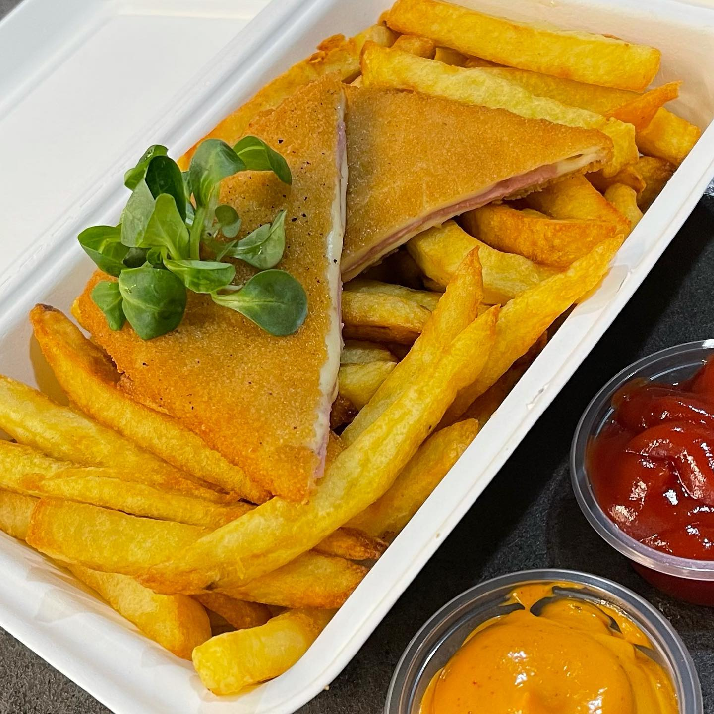

Vyprážaný syr podľa @brammfrites — Normy Jedál
🧀🥓🍟🇧🇪Stará dobrá klasika. Vyprážaný syr plnený šunkou. Belgické hranolky pripravované podľa tradičnej receptúry. #brammoriginals #cheese #ham #eidam #syr #sunka #vyprazanysyr #vyprážany #smažák #syrsesunkou #smaženýsýr #plnenysyr #frites #sauce #belgiansauce #bonappetit #hranolky #omacky #dobruchut #dnes_jem #obed #yummy #chutne #belgickehranolky #omáčka #jedlo #takeaway #streetfood #menu #brammfrites @freshmarketba